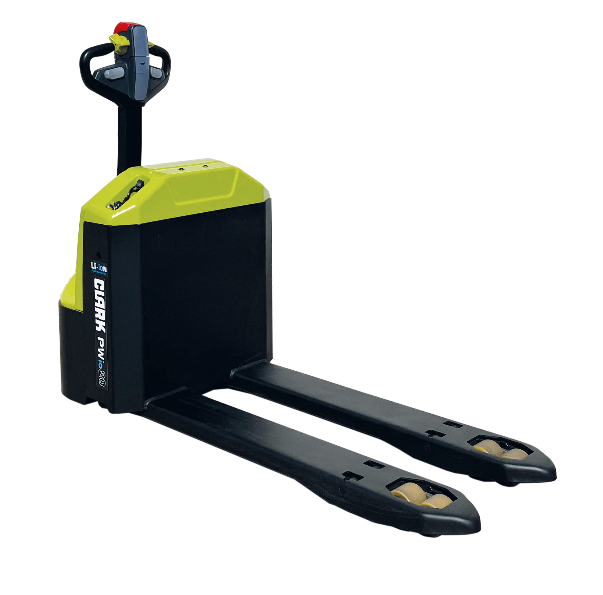

Clark PWio20 — Paleteira Elétrica 2.000 kg com Plataforma do Operador
O operador vai junto. Sem caminhar no percurso longo. Sem carga nas pernas no fim do turno.
Solicitar proposta de compra
O operador vai junto. Sem caminhar no percurso longo. Sem carga nas pernas no fim do turno.
Solicitar proposta de compra
No CD de uma rede atacadista em Goiânia, o percurso de uma paleteira walkie convencional era de 80 metros entre a posição de separação e a doca. O operador fazia esse trecho 40 vezes por turno, sempre a pé ao lado da máquina. Ao final de oito horas, ele tinha caminhado mais de 6 km dentro do armazém.
A queixa de cansaço na equipe não era falta de condicionamento. Era falta da máquina certa.
A Clark PWio20 é uma paleteira elétrica walkie com plataforma fixa integrada à estrutura da máquina. Em uma paleteira walkie convencional (como a WPio15 ou WPio20), o operador caminha ao lado ou atrás da máquina durante todo o deslocamento. Na PWio20, ele se posiciona na plataforma e vai junto.
A diferença parece pequena no papel. Em um turno de oito horas com alto ciclo, a diferença é de quilômetros. Literalmente.
A plataforma não é um acessório. É parte da estrutura da máquina. Isso significa que o peso do operador é distribuído adequadamente, o centro de gravidade é calculado com a plataforma ocupada, e a segurança não é comprometida.

O raio de giro de 1.320 mm da PWio20 é o número que mais importa para quem compra. Significa que ela consegue fazer a curva em corredor de menos de 3 metros. Para CDs com layout apertado, isso é o que determina se a máquina passa ou não.
| Especificação | Clark PWio20 |
|---|---|
| Capacidade nominal | 2.000 kg |
| Comprimento de garfo (L2) | 470 mm |
| Largura total | 714 mm |
| Peso da máquina | ~280 kg |
| Raio de giro | ~1.320 mm |
| Tecnologia de bateria | Li-Ion |
| Manutenção de bateria | Zero |
| Tipo de plataforma | Fixa integrada |
| Emissões | Zero |
A largura de 714 mm permite operar em corredores estreitos sem sacrificar a estabilidade lateral. O garfo de 470 mm é compatível com paletes europeus e brasileiros padrão.
O peso de 280 kg. Para uma máquina com plataforma de operador, 2.000 kg de capacidade e bateria Li-Ion integrada, isso é compacto. Cabe na maioria dos elevadores de carga industriais. Passa por portas de câmara fria padrão. Não precisa de reforço de piso para circular em galpões convencionais.
As duas máquinas têm a mesma capacidade, a mesma tecnologia de bateria e a mesma plataforma Clark. A diferença está no uso. A regra prática:
Percursos curtos (até 30 m), operação em corredor muito estreito que não comporta a plataforma, operações pontuais sem alto ciclo, ambientes com curvas frequentes em espaço reduzido.
Percursos acima de 30 metros, alto ciclo (20+ viagens por hora), operação com turnos de 8+ horas, equipe com queixa de cansaço nas pernas ao final do turno, CDs de grande área.
Não existe "melhor" entre as duas de forma absoluta. Existe a certa para cada layout e volume de operação. Para operações com percurso longo e alto ciclo, a PWio20 paga a diferença de preço em produtividade e redução de atestados médicos por fadiga musculoesquelética.
O CD do atacadista trocou as paleteiras walkie convencionais por Clark PWio20. O percurso dos 80 metros continuou o mesmo. O que mudou foi que o operador passou a fazê-lo em cima da plataforma, e não a pé.
Três semanas depois, a queixa de cansaço na equipe havia sumido. A produtividade no segundo turno subiu 12%.
| Especificação | Valor |
|---|---|
| Capacidade nominal | 2.000 kg |
| Tecnologia de bateria | Lítio-íon (Li-Ion) |
| Manutenção de bateria | Zero |
| Carregamento de oportunidade | Compatível |
| Tipo de plataforma | Fixa, integrada à estrutura |
| Comprimento de garfo (L2) | 470 mm |
| Largura total | 714 mm |
| Peso da máquina | ~280 kg |
| Raio de giro | ~1.320 mm |
| Emissões | Zero |
| Normas | NR-11, NR-12 |
| Uso | Interno (piso plano) |
A plataforma da PWio20 tem superfície antiderrapante. Para pisos com água no chão (como câmaras frias com degelo), recomenda-se verificar o piso antes de cada turno e usar EPI adequado (botas antiderrapantes), conforme as exigências da NR-12.
A plataforma é dimensionada para o peso padrão de operador adulto. Para operadores com peso acima de 120 kg, consulte a Move Máquinas para verificar a especificação completa e a adequação da máquina.
Com peso de ~280 kg, a máquina cabe na maioria dos elevadores de carga industriais. Verifique a capacidade do elevador da sua instalação. O operador deve sair da plataforma antes de entrar no elevador, por segurança e para não ultrapassar a capacidade nominal.
Sim. A máquina pode ser operada no modo walkie convencional (operador a pé, sem se posicionar na plataforma), quando o percurso for curto ou o corredor exigir manobra mais precisa. A plataforma não é obrigatória para o funcionamento.
O PPXs20 é uma paleteira com plataforma de maior capacidade e desempenho para operações de alta intensidade, com direção elétrica e velocidade de até 12 km/h. Para percursos mais longos e maior velocidade, o PPXs20 é o modelo indicado. Para operações padrão, a PWio20 resolve a maioria dos casos.
Depende do estoque disponível no momento da compra. Solicite a proposta pelo formulário abaixo e a Move Máquinas informa o prazo real na proposta, em até 1 dia útil.
Informe os dados abaixo. A Move Máquinas retorna com proposta em até 1 dia útil.
Ou fale direto pelo WhatsApp: Chamar a Move Máquinas